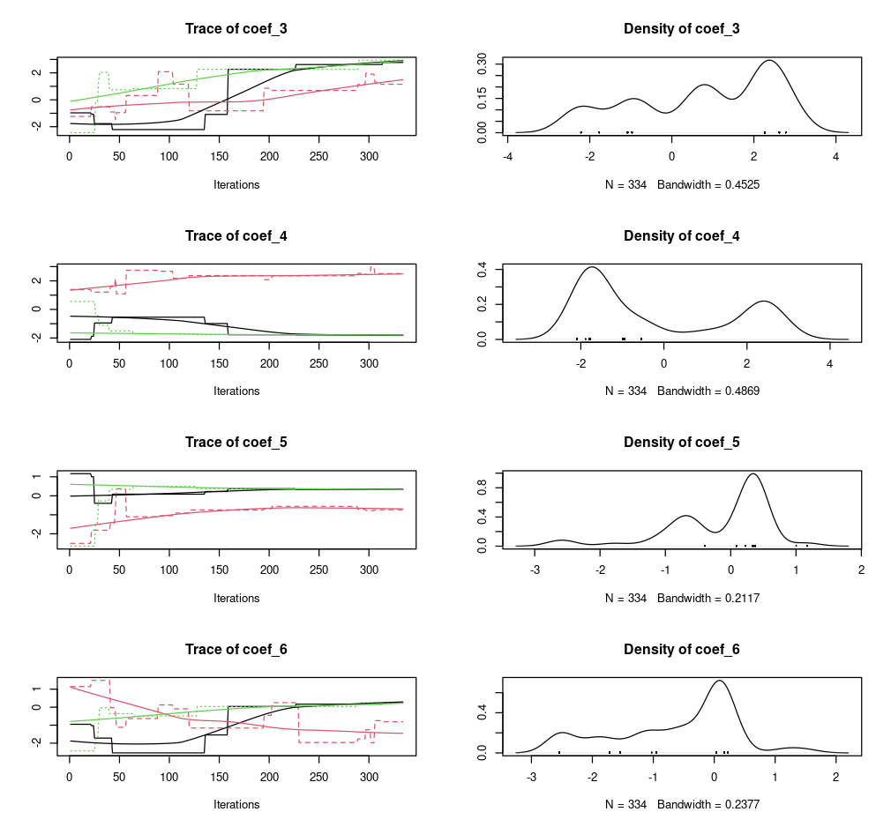

Model calibration
Koen Hufkens
2026-04-20
model_calibration.RmdModel calibration compares real world observations with model results, while varying the various parameters (tuning knobs) of the model. This is an iterative process in which an algorithm searches for the best solution in the large space of potential parameters defined by parameter ranges.
Setting model parameter ranges
To calibrate our model we now have to specify additional settings.
These are provided to the {homeranger} model as a nested list including
the metric to use for evaluation, the control
parameters for the {BayesianTools} optimization package (see the package
reference for details), and the actual model parameters
par. The model parameters include a sub-list of
coefficients coef which should be of equal length to the
number of layers used in your driver data. The model parameters
par (and coef) are (named) lists of three
values, a lower bound, an upper bound, and a starting value.
par <- list(
metric = "hr_cost",
control = list(
sampler = "DEzs",
settings = list(
iterations = 10000
)
),
par = list(
r_l = list(lower=0.0001, upper=1, init = 0.5),
w_l = list(lower=0.0001, upper=1, init = 0.5),
r_d = list(lower=0.0001, upper=1, init = 0.5),
w_d = list(lower=-1, upper=-0.0001, init = -0.5),
r_dist = list(lower=0.0001, upper=1, init = 0.5),
w_dist = list(lower=0.0001, upper=1, init = 0.5),
step_length_dist = list(lower=0.0001, upper=0.1, init = 0.5),
step_length_shape = list(lower=0.3, upper=3, init = 1),
threshold_approx_kernel = list(lower=4000, upper=8000, init = 5000),
threshold_memory_kernel = list(lower=500, upper=6000, init = 1000),
# resource selection coefficients come last
# these are unnamed
coef = list(
lower = rep(-3, 6),
upper = rep(3, 6),
init = rep(0, 6)
)
)
)In this demonstration the model optimization will only evaluate 1000 potential parameter sets to keep calculations short. Similarly, some of the parameter bounds are kept artificially narrow to speed up calcuations. You should not use these values as starting values in your own model fits!
Calibration
Model calibration is done using the hr_fit() routine.
This routine takes gridded drivers and actual observations as input. For
the pre-processing of these I refer to the data formatting vignette!
# calibrate the model and optimize free parameter
opt_par <- hr_fit(
data = drivers,
obs = obs,
par = par,
parallel = FALSE
)Model optimization results, in particular the parameter distributions, can be easily visualized using a plot command.
# plot BayesianTools results
plot(opt_par$mod)
Note that all model calculations are done in memory. This means that if your driver data is large your model calibration (but also simulations) might fail. Remember that the model itself requires both space for to hold the driver data but also additional memory for the calculations, so assuming that being able to convert and prepare the data is does not imply that you have sufficient memory to run the model. Furthermore, memory requirements will multiply by the number of cores used during parallelization (see below). Where possible process will fail gracefully, but make note of memory requirements and consider this when designing a model calibration strategy.
Parallelization
Different methods of parallelizations are possible, but they serve different needs.
Parallel estimation of global parameters (internal)
First there is the parallel estimation of a single set of parameters
which is shared across multiple observed individuals. Considerable speed
can be gained by optimizing parameters in parallel. However, it depends
on the data you provide. When using large (pooled data of many
individuals) datasets for which a single set of parameters needs to be
calculated you can use the built in parallel parameters
(set to TRUE). This will provide you a speed up equivalent
to the number of processing units available in your system. This method
can also be used when you have a large amount of observations for a
single individual. However, this use case is probably less common as you
would multiple thousands of observations. In both cases the processing
time of a total model run is large in comparison to the input/output
overhead to the system due to the distribution and retrieval of data
across the cluster processing units. For a single individual with a
short track no speed gains will be made using the built in
parallelization. When using this method is helpful to know that the
number of iterations used are split across the number of parallel
processes (chains).
Parallel estimation of individual parameters (external)
Alternatively, you can use a bespoke script to estimate model
parameters for each individual separately. This method distributes
hr_fit() calls across CPUs of your system/cluster. Below is
one possible way to implement this using the {parallel} package.
First we’ll create a nested list of coordinates, by individual. Note that you can use any other method to group individuals together.
# split the list of coordinates
# according the the individual id
# or any other grouping factor (according to your experiment)
obs <- obs |>
dplyr::group_split(id)
# show first elements of the list
head(obs, n = 2)
#> <list_of<
#> tbl_df<
#> id: integer
#> x : integer
#> y : integer
#> >
#> >[1]>
#> [[1]]
#> # A tibble: 421 × 3
#> id x y
#> <int> <int> <int>
#> 1 1196 1001 592
#> 2 1196 999 585
#> 3 1196 1002 583
#> 4 1196 1002 583
#> 5 1196 1001 587
#> 6 1196 1002 587
#> 7 1196 1002 588
#> 8 1196 1003 587
#> 9 1196 1002 587
#> 10 1196 1002 588
#> # ℹ 411 more rowsNext a cluster setup is defined with 4 cores, you can adjust this to
your system settings. You can use parallel::detectCores()
to detect the maximum number of cores on your system. It is adviced to
use one core less than this maximum as the system management needs
processing power, too. In addition, we use the
parallel::clusterExport() function to send/forward all
required functions to all cluster nodes. This includes for each node,
the driver data drivers, the parameter ranges
par and the fitting function hr_fit().
# Create cluster with n cores
cl <- parallel::makeCluster(4)
# export functions / variables
parallel::clusterExport(
cl,
varlist = list("drivers","par", "hr_fit")
)We now wrap the hr_fit() function in a wrapping function
which only takes a single argument X on it’s first position. We then
call this wrapping function using the parallel lapply()
function, parallel::parLapply(). This function a list of
observations obs to distribute to the cluster
cl and a function which takes an argument X,
containing the subset of the list obs for which to estimate
the parameters.
# custom wrapping function
split_fit <- function(X){
hr_fit(
data = drivers, # as forwarded to the cluster node
obs = as.matrix(X), # provided to the cluster node as "X"
par = par, # as forwarded to the cluster node
parallel = FALSE
)
}
# estimate optimal parameters for all entries in the
# list
opt_list <- parallel::parLapply(
cl = cl,
X = obs,
fun = split_fit
)
# stop the cluster, clean up the nodes
parallel::stopCluster(cl)Parallel estimation of global parameters (external)
Observant readers will note that the above method could also be used
to optimize global parameters if the data collected from the various
processes (chains) could be combined. Luckily the {BayesianTools}
package provides a utility function to do so, namely
BayesianTools::createMcmcSamplerList().
# split out model output details
# from the standard hr_fit() output
mod <- lapply(opt_list, \(x) x$mod)
## Combine the chains
out <- BayesianTools::createMcmcSamplerList(mod)